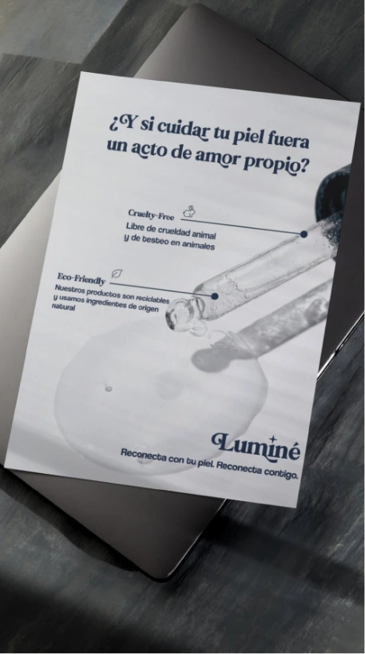
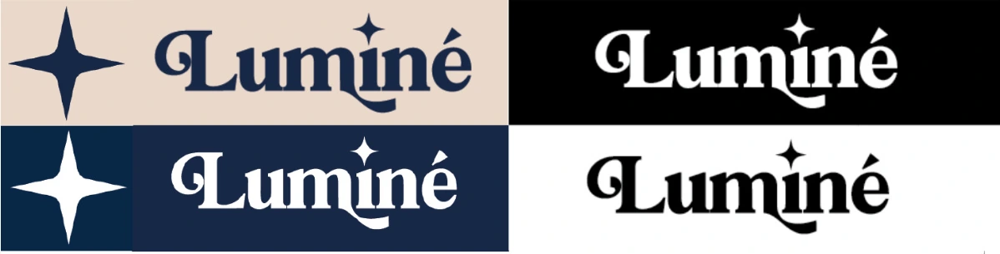
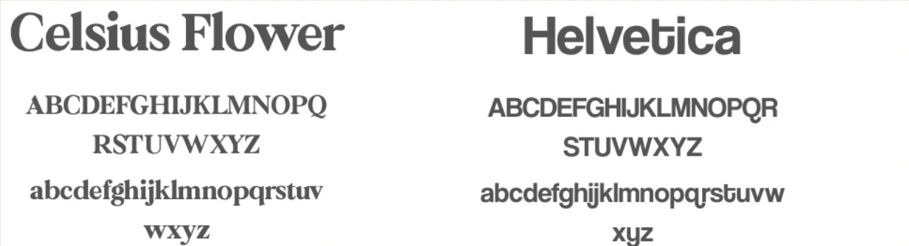
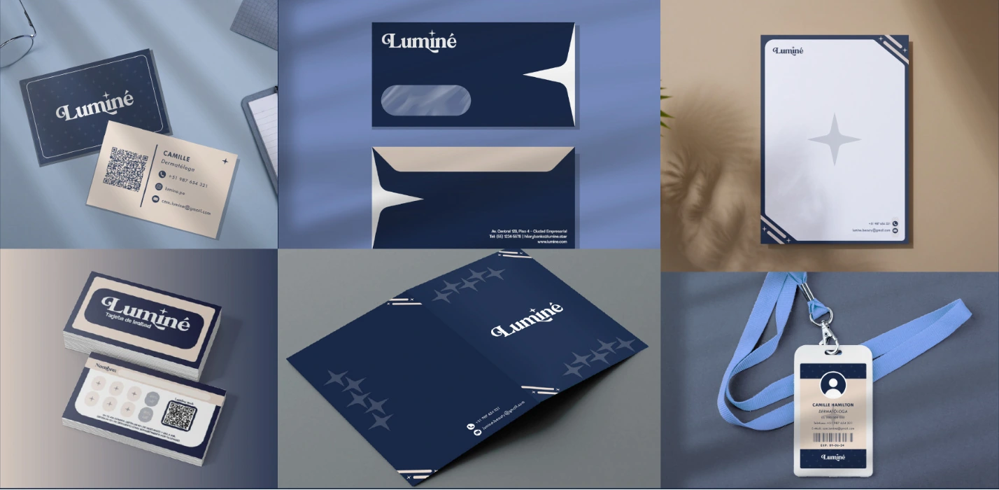
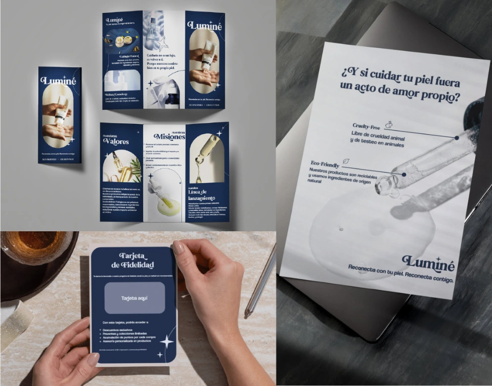
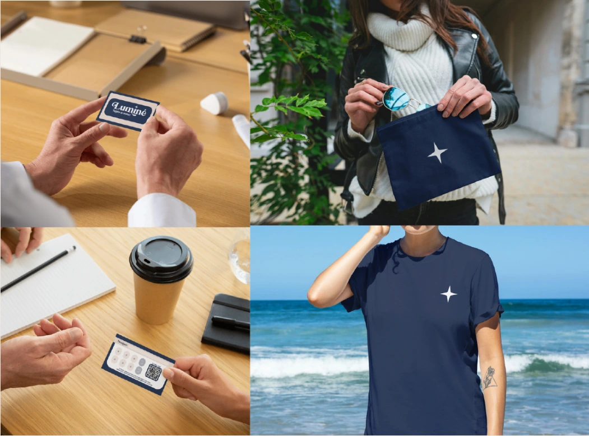
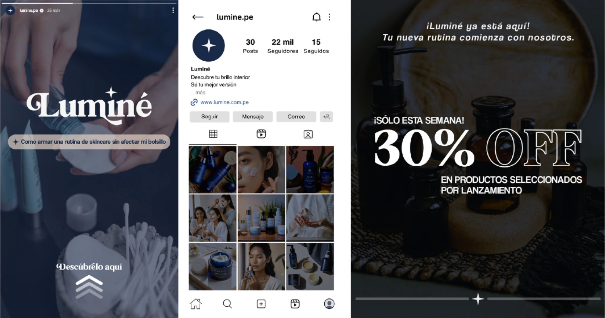

Percepción
La encuesta del proyecto destacó estética, aroma y calidad.
Creación de identidad y manual de marca
Cuidar. Reconectar. Iluminar.
Arrastra una esquina o usa las flechas para pasar página.
Abrir visor independiente ↗El punto de partida
Luminé propone productos para la piel y el rostro inspirados en la flora peruana. Su propósito es ayudar a las personas a reconectar con su piel y sentirse seguras de ella.
El reto: convertir esa promesa de cuidado en una identidad cercana, consistente y reconocible.
Proyecto académico colaborativo

Concepto y dirección de marca
El Cuidador aporta empatía y protección. El Inocente suma optimismo y transparencia. Esta personalidad orienta cómo Luminé se presenta y se comunica.
La encuesta del proyecto destacó estética, aroma y calidad.
Una marca nueva necesita una presencia clara y coherente.
Flora peruana, cercanía y accesibilidad como propuesta.
Bienestar, autoestima y una experiencia de cuidado accesible.
De la personalidad al lenguaje visual
Luminé nace de “iluminar”. La terminación con “é” busca aportar elegancia y un carácter distintivo al nombre.

Una expresión cálida que acompaña el cuidado personal.
Nombre y destello como señales de una misma identidad.
Color y tipografía conectan los distintos soportes.
Sistema visual

De la identidad a sus aplicaciones
Tarjetas, sobre, hoja membretada, carpeta y credencial forman un sistema institucional coherente.

Fotografía, titulares y firma visual al servicio del bienestar.

Bolso, camiseta y fidelización dentro de una familia visual.

La identidad se adapta a historias, perfil y promociones de Instagram para el lanzamiento.

Resultado · Manual de marca
El manual reúne los fundamentos de la marca, su identidad visual y ejemplos de aplicación para orientar un uso consistente.
Nombre, color, tipografía y variantes mantienen continuidad entre soportes.
Volver a versión interactiva ↑
Síntesis del proyecto
Bienestar y confianza como punto de partida.
Nombre, destello y color construyen reconocimiento.
Una familia visual para soportes físicos y digitales.
Equipo del proyecto
Proyecto académico colaborativo.
Proceso basado en la presentación de portafolio Luminé.